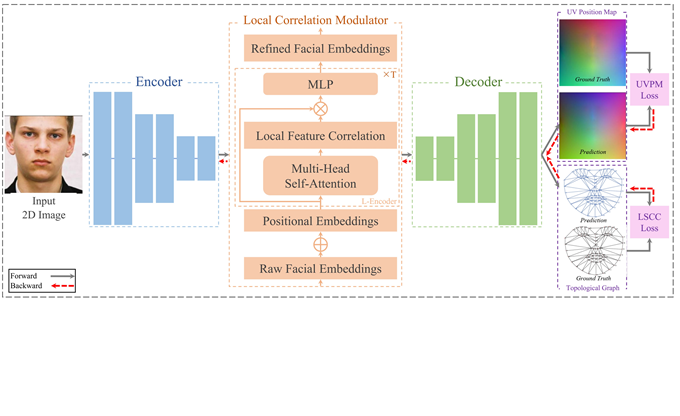
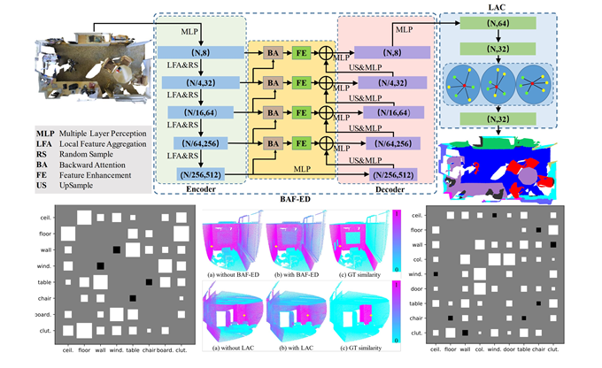
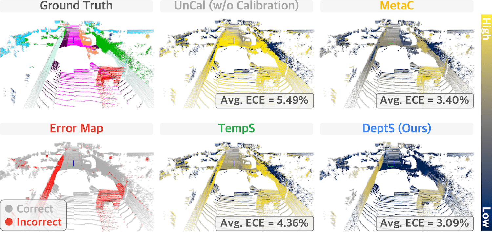
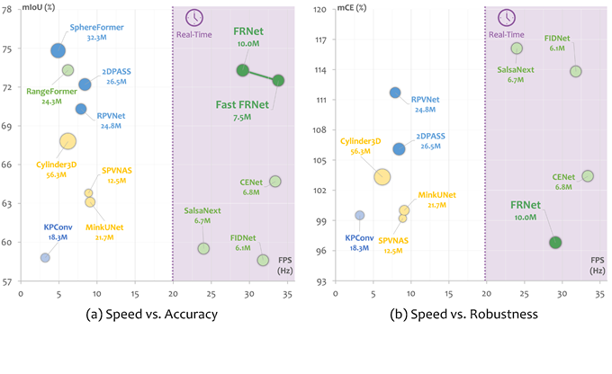
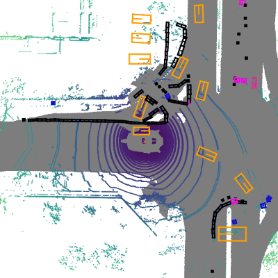

About me
I am a Ph.D. student of Nanjing University of Aeronautics and Astronautics, supervised by Qingshan Liu. Before, I served as an algorithm engineer of Leapmotor Technology from July 2021 to February 2023. I obtained my Master's Degree and Bachelor's Degree at Nanjing University of Information Science and Technology respectively, supervised by Qingshan Liu. My current research is mainly focus on general 3D perception, including segmentation and detection for point cloud. Here is my personal CV.
News
- [2023/01] I have been invited as a collaborator on MMDetection3D.
- [2022/07] Waterfall-Net, a new point cloud segmentation paradigm network with waterfall feature aggregation, is accepted by PRCV 2022.
- [2022/04] CED-Net, which introduces contextual information both in shape and feature level for 3D face reconstruction, is accepted by Multimedia Systems.
- [2021/12] SA-Net, a semantic-aware network for point cloud object detection, is accepted by ICOMV 2022.
- [2021/04] BAF-LAC, a novel segmentation paradigm network for point cloud, is accepted by TIP.
Education
- Nanjing University of Aeronautics and Astronautics (NUAA)
- April 2023 - Present
- Ph.D. in Computer Science and Technology
- Nanjing University of Information Science and Technology (NUIST)
- September 2018 - June 2021
- M.S. in Control Science and Engineering
- Nanjing University of Information Science and Technology (NUIST)
- September 2014 - June 2018
- Major: B.E. in Electrical Engineering and Automation
Publications

- Waterfall-Net: Waterfall Feature Aggregation for Point Cloud Semantic Segmentation
- Hui Shuai, Xiang Xu, Qingshan Liu
- Chinese Conference on Pattern Recognition and Computer Vision, 2022
- [Paper] [Code]

- CED-Net: Contextual Encoder-Decoder Network for 3D Face Reconstruction
- Lei Zhu, Shanmin Wang, Zengqun Zhao, Xiang Xu, Qingshan Liu
- Multimedia Systems, 2022
- [Paper]

- Semantic-Aware Object Detection for 3D Point Cloud
- Xiang Xu, Gang Huang, Laifeng Hu, Yaonong Wang
- International Conference on Optics and Machine Vision, 2022
- [Paper]

- Backward Attentive Fusing Network with Local Aggregation Classifier for 3D Point Cloud Semantic Segmentation
- Hui Shuai, Xiang Xu, Qingshan Liu
- IEEE Transactions on Image Processing 2021
- [Paper] [Code]
Preprints

- Calib3D: Calibrating Model Preferences for Reliable 3D Scene Understanding
- Lingdong Kong*, Xiang Xu*, Jun Cen, Wenwei Zhang, Liang Pan, Kai Chen, Ziwei Liu
- arXiv 2024
- [Paper] [Code]

- FRNet: Frustum-Range Networks for Scalable LiDAR Segmentation
- Xiang Xu, Lingdong Kong, Hui Shuai, Qingshan Liu
- arXiv 2023
- [Paper] [Code] [Project] [Demo]
Research Projects

- MMDetection3D: OpenMMLab Next-Generation Platform for General 3D Object Detection
- MMDetection3D Contributors
- January 2023 - Present
- [Code]
Experience
- Leapmotor Technologies Co. Ltd.
- July 2021 - February 2023. Advisor: Laifeng Hu
- Focus: Lidar perception for autonomous driving.
Miscellaneous
Academic Services
I serve as a collaborator of MMDetection3D,
work closely with Wenwei Zhang and Lingdong Kong.
Hobbies
Love: 🏀Basketball, 🎶music, 🏸badminton, and 🏓table tennis.